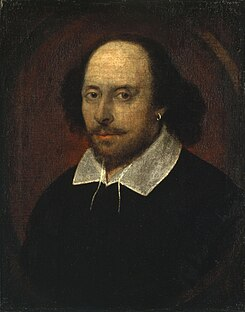

William Shakespeare
From Wikipedia, the free encyclopedia
William Shakespeare (bapt. 26 April 1564 – 23 April 1616) was an English poet,
playwright and actor, widely regarded as the greatest writer in the English language
and the world's greatest dramatist. He is often called England's national poet and the
"Bard of Avon". His extant works, including collaborations, consist of approximately
39 plays, 154 sonnets, two long narrative poems, and a few other verses, some of
uncertain authorship. His plays have been translated into every major living language
and are performed more often than those of any other playwright.
Shakespeare was born and raised in Stratford-upon-Avon, Warwickshire. At the age
of 18, he married Anne Hathaway, with whom he had three children: Susanna and
twins Hamnet and Judith. Sometime between 1585 and 1592, he began a successful
career in London as an actor, writer, and part-owner of a playing company called the
Lord Chamberlain's Men, later known as the King's Men. At age 49 (around 1613), he
appears to have retired to Stratford, where he died three years later. Few records of
Shakespeare's private life survive; this has stimulated considerable speculation about
such matters as his physical appearance, his sexuality, his religious beliefs, and
whether the works attributed to him were written by others. Such theories are often
criticised for failing to adequately note that few records survive of most commoners
of the period.
Shakespeare produced most of his known works between 1589 and 1613. His early
plays were primarily comedies and histories and are regarded as some of the best
work produced in these genres. Until about 1608, he wrote mainly tragedies, among
them Hamlet, Othello, King Lear, and Macbeth, all considered to be among the finest
works in the English language. In the last phase of his life, he wrote tragicomedies
(also known as romances) and collaborated with other playwrights.
Many of Shakespeare's plays were published in editions of varying quality and
accuracy in his lifetime. However, in 1623, two fellow actors and friends of
Shakespeare's, John Heminges and Henry Condell, published a more definitive text
known as the First Folio, a posthumous collected edition of Shakespeare's dramatic
works that included all but two of his plays. The volume was prefaced with a poem
by Ben Jonson, in which Jonson presciently hails Shakespeare in a now-famous quote
as "not of an age, but for all time".
Throughout the 20th and 21st centuries, Shakespeare's works have been continually
adapted and rediscovered by new movements in scholarship and performance. His
plays remain popular and are studied, performed, and reinterpreted through various
cultural and political contexts around the world.

Born 26 April 1564
Died 23 April 1616
Spouse Anne Hathaway (m. 1582)
Children Susanna Hall
Hamnet Shakespeare
Judith Quiney
Parents John Shakespeare (father)
Mary Arden (mother)
Born 26 April 1564
Died 23 April 1616
Spouse Anne Hathaway (m. 1582)
Children Susanna Hall
Hamnet Shakespeare
Judith Quiney
Parents John Shakespeare (father)
Mary Arden (mother)